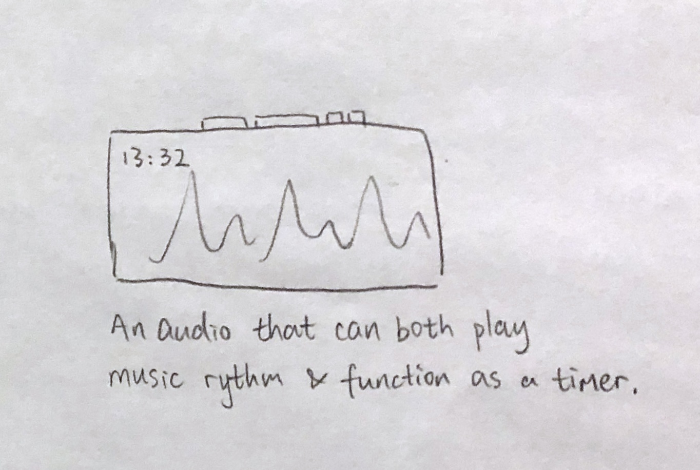
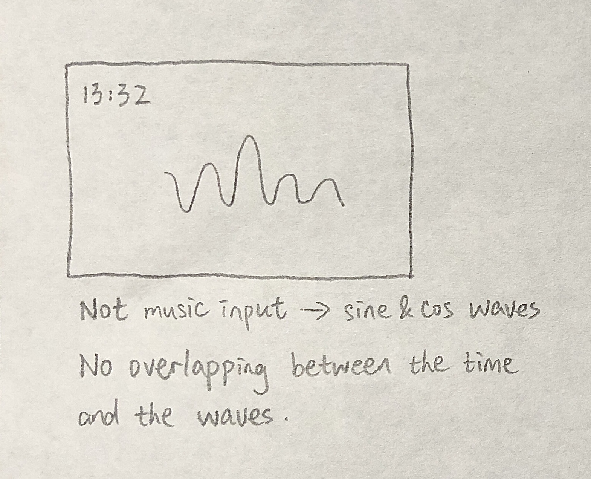
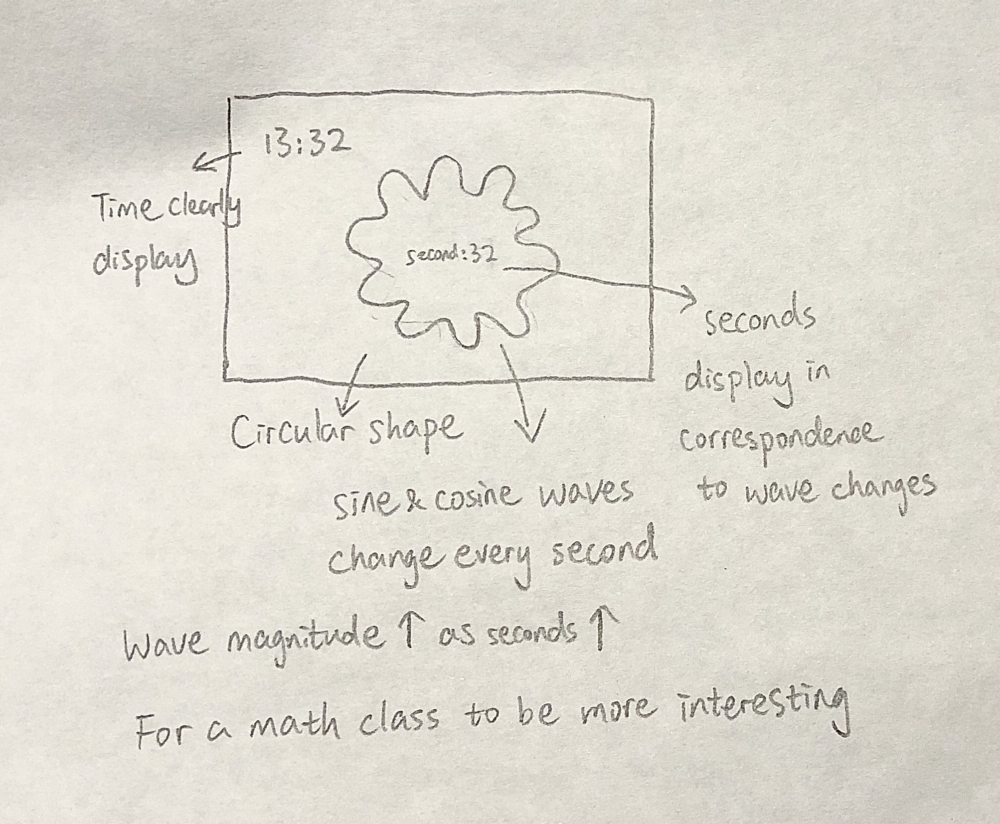
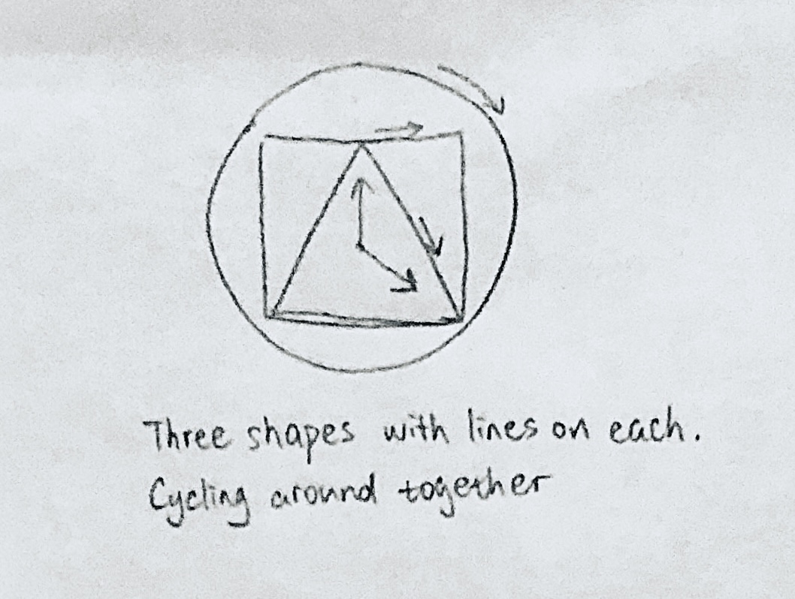
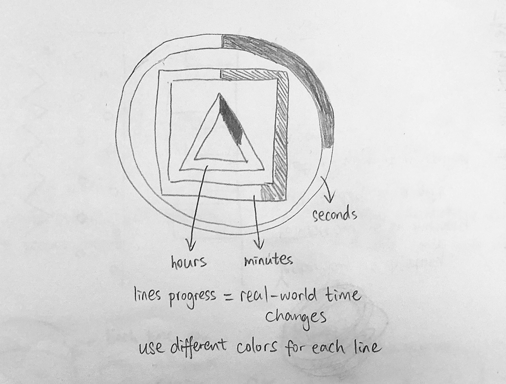
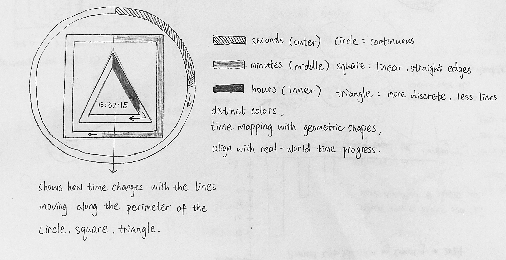
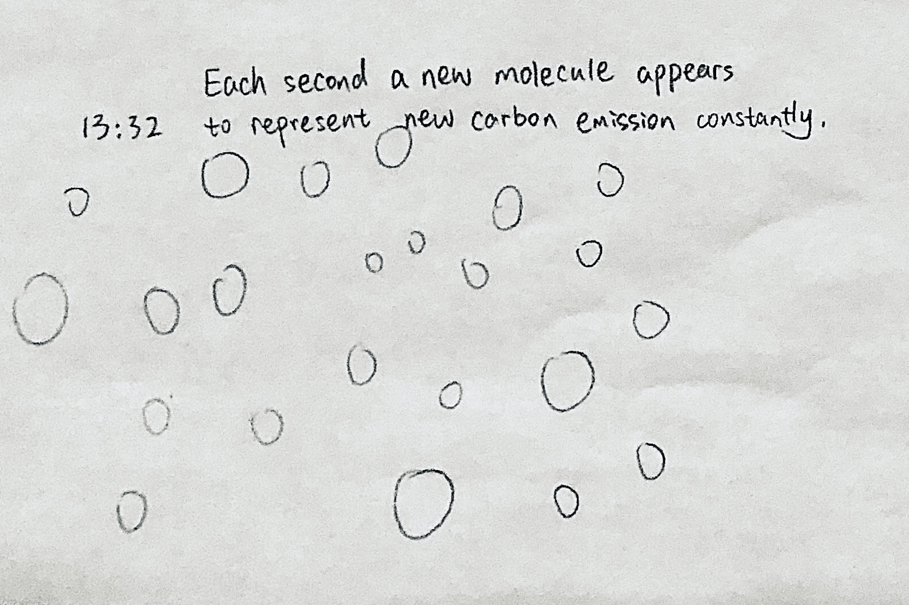
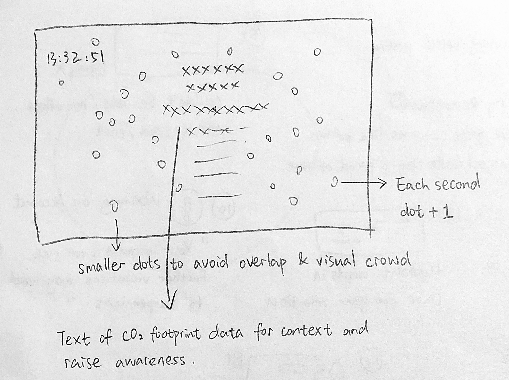
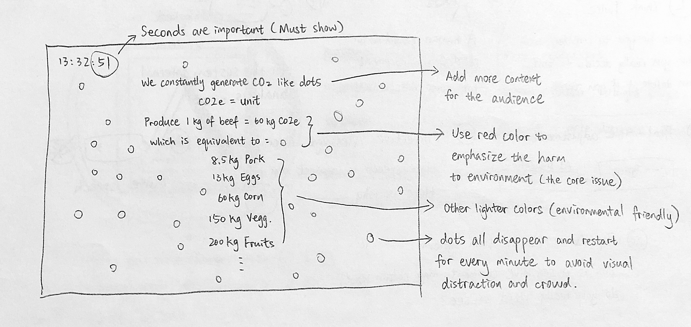

Sketch narrative
This sketch visualizes passing seconds as a waveform clock for a simple teaching demo on mathematical concepts such as sine and cosine wave behavior and polar coordinates, triggering students' interest to learn math.
- Context: This visualization is designed for teachers to use in a math classroom or lecture projection. Instead of reading numbers, students perceive sinusoidal functions rhythmically with time. This would enhance their understanding of both time and math concepts, and make the math class more vivid and interesting.
- Design decisions: 1. A circular form was chosen because it naturally represents cyclical systems such as seconds looping every minute and the real-world clock. 2. Wave amplitude grows with seconds to create an intuitive sense of time accumulation. 3. Different sine and cosine functions are swapped every second to show variations in math functions. 4. Simple black-and-white, high-contrast colors ensure readability on large displays and reduce visual distraction, keeping focus on geometry and motion rather than decoration. Constraints: The rapid change in wave patterns every second may be visually intense and overwhelming for neurodivergent people since they tend to be sensitive to motion, flicker, or high-frequency visual change. Slower transitions or smoothing could improve accessibility.
- Future work: Future versions could map minutes to color shifts and add slow rotation to simulate a spinning record, reinforcing angular velocity concepts. Additional overlays could display the underlying sine and cosine equations in real time for educational clarity.
Sketch evolution



Sketch narrative
This sketch visualizes time using three geometric shapes - a circle, square, and triangle — to demonstrate how seconds, minutes, and hours can be mapped onto different geometric forms in a math class.
- Context: This visualization is designed for teachers to use in a math classroom or lecture projection. Instead of reading numbers, students see how time can be represented through geometry: continuous motion for seconds, linear progression for minutes, and discrete steps for hours. This helps connect abstract time concepts with geometric structures.
- Design decisions: 1. A circular form represents seconds because circles naturally model continuous cyclical motion, like a traditional clock. 2. A square represents minutes to emphasize linear progression along straight edges, showing time as a sequence of segments. 3. A triangle represents hours to illustrate discrete states and proportional segments, highlighting how hours advance in steps rather than continuously. 4. High-contrast, accessible colors are used to ensure readability on large displays and support visually impaired viewers, keeping focus on structure and motion rather than decoration. Constraints: The geometric clock simplifies real-world time into idealized shapes, which may oversimplify how clocks actually work. Students might misinterpret the square and triangle as literal clock mechanisms rather than conceptual mappings.
- Future work: Future iterations could allow interactive controls so students can pause, scrub time, or manually adjust hours, minutes, and seconds to explore geometric mappings.
Sketch evolution



Sketch narrative
This sketch visualizes carbon emissions using accumulating dot symbols and an interactive text narrative, paired with a live time display in the corner to connect environmental data with real-world time. Each dot appears every second, symbolizing continuous emissions, while textual information about food-related carbon footprints is revealed through user interaction to raise awareness of climate impact.
- Context: This interactive visualization is designed for a math classroom to help students explore real-world data through patterns, rates, and accumulation, linking mathematical concepts like counting, time intervals, and data interpretation with urgent environmental issues. By engaging with this tool, students deepen their understanding of exponential growth and statistics while developing critical thinking about climate impact, making math both relevant and impactful.
- Design decisions: 1. Dots accumulate every second to symbolize ongoing emissions, and they disappear each minute to avoid visual clutter. 2. Red text emphasize urgency, gray text indicate definition or context, and subsequent text in light greens, blues, and other colors evoke ecological and atmospheric themes. 3. A real-time clock in the corner grounds the abstract visualization in lived, continuous time, reinforcing that emissions are happening now. 4. Text displays line by line through user clicks, making it interactive. Constraints: The randomly appearing dots in the background may overlap with the timer or text, which may be refined through code.
- Future work: Future iterations could add sound effects to further emphasize urgency and add additional motion design to the dots to make them more vivid.
Sketch evolution


